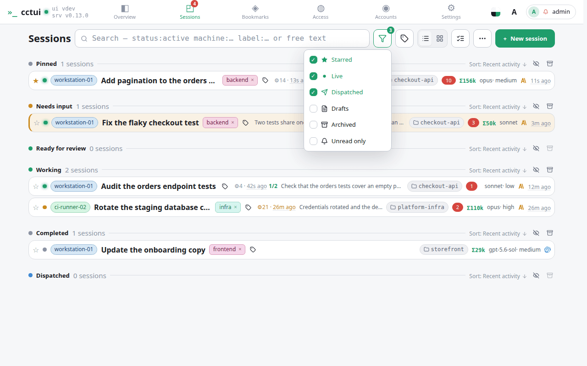
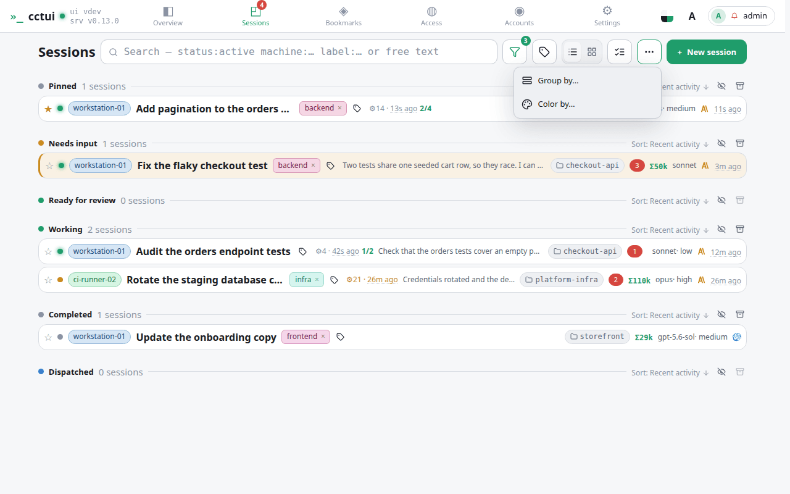

Narrow the list as you type Plain words match titles and prompts. Add a field — machine, label, status — to cut straight to a slice of the fleet instead of scrolling it.

Keep the ones that matter in reach Starred sessions get their own group above everything else — the fastest way to pin the two or three runs you actually care about today.Group by whatever you are debugging Group by machine when you suspect one box, by project when you are context-switching. Colour-by tints the cards on a second dimension, so you can read both at once.

Collapse or clear a whole group The eye folds a group away without losing it. Beside it, archive retires every session in that group in one move — how a finished batch leaves the list for good.